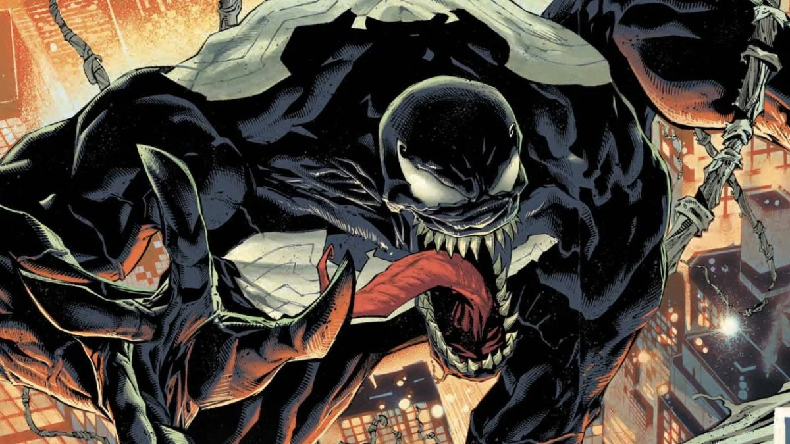
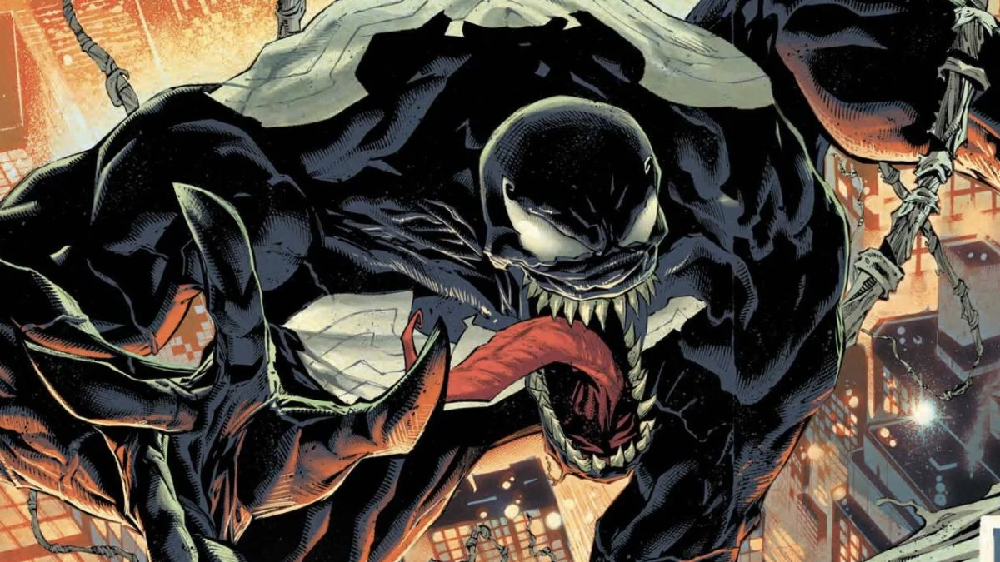

Rouges Gallery
Here are a few members of Spider-Man's rogues gallery.


After being bitten by an irradiated spider at a science experiment, high school student Peter Parker failed to stop his beloved Uncle Ben from being murdered by a burglar, thus setting him on a new path to using his powers to become a super hero, Spider-Man.
Here are a few members of Spider-Man's rogues gallery.

Spiderman has had several love interests throughout the year including Mary Jane Watson, Gwen Stacy and the anti hero Black Cat. Below are some pictures of the three